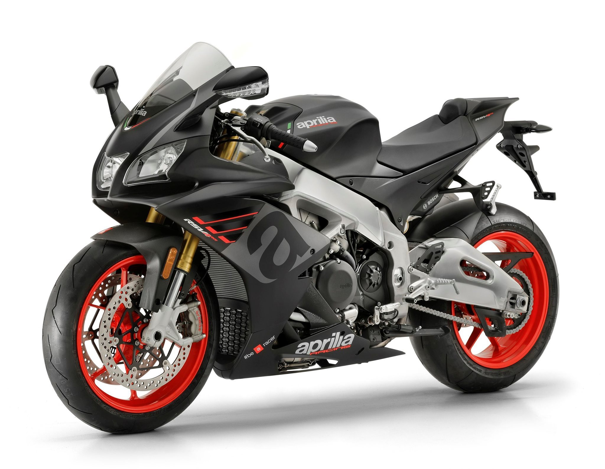
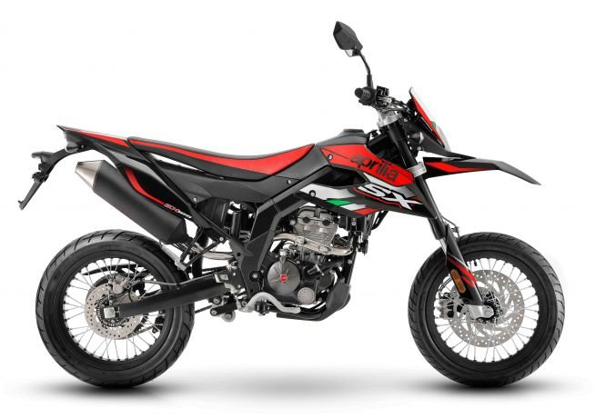
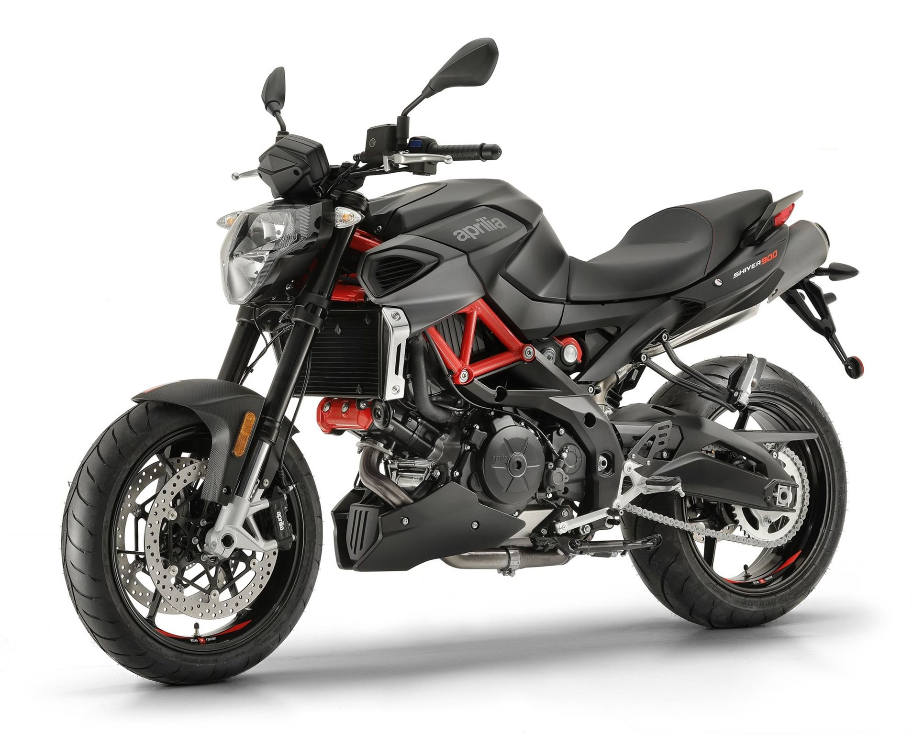
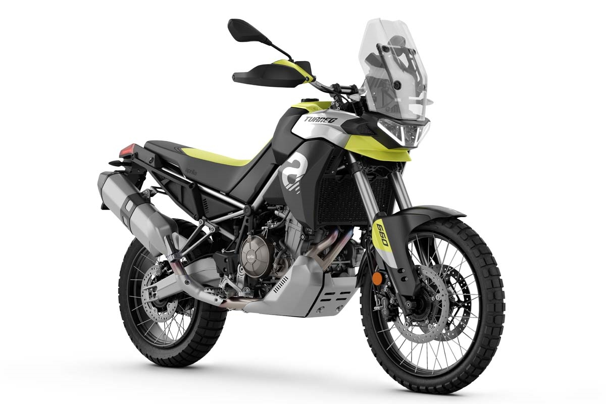

Modelle
| Name | Klasse | Hubraum |
|---|---|---|
| RSV4 | Supersport | 999,63 cm³ |
| SX125 | Supermoto | 125 cm³ |
| Shiver 900 | Naked Bike | 900 cm³ |
| Tuareg 660 | Enduro/Cruiser | 660 cm³ |
RSV4
Die RSV4 ist viel mehr als zwei Räder zwischen einem starken Motor. Es ist der Höhepunkt eines ehrgeizigen Projekts, das aus der Rennabteilung von Aprilia hervorgegangen ist. Sie ist die Konsequenz der besten verfügbaren Technologie, jetzt mit integrierten aerodynamischen Anbauteilen, verbesserter aerodynamischer Effizienz, 217 PS und noch mehr Drehmoment in Kombination mit Aprilias einzigartigem Fahrwerk. Sie ist ein Meisterwerk, das geschaffen wurde, um Sie vom ersten Blick an atemlos zu machen und Ihr Adrenalin jedes Mal in Fahrt zu bringen, wenn Sie das Gas geben.
SX125
Die neue Aprilia SX ist einfach eine der effektivsten 125er auf der Straße. Sie ist schnell und leicht und bietet, auch dank ihres geringen Gewichtes, ein hohes Maß an Sicherheit. 'Sie ist schnell und leicht und bietet, auch dank ihres neuen Motors, Benchmark-Performance für die gesamte Kategorie. Es ist ein authentisches Aprilia-Motorrad, das in Design und Leistung erneuert wurde, bereit, jedem, der den Lenker ergreift, große Emotionen zu bieten.
Shiver 900
Die jüngste Entwicklung der Sport Naked von Noale wird von einem raffinierten 900-cm³-Twin-Zylinder angetrieben, der Drehmomentwerte an der Spitze der Leistungsklasse garantiert, kombiniert mit einem absolut topmodernen Regalrahmen für eine Fahrbarkeit, die die Messlatte im Segment der nackten Sportmotorräder auf neue Höhen legt. Ein intuitives, leistungsstarkes, leicht zu handhabendes Motorrad und jetzt noch technologischer dank des neuen integrierten Navigationssystems im Kombi-Instrument, das auch in der auf 35 kW begrenzten Leistungsversion für Fahrer mit A2-Führerschein erhältlich ist".
Tuareg 660
Technisch, essentiell, dynamisch und stolz auf ihre italienische Herkunft: Die Tuareg 660 akzeptiert nicht die Herausforderungen der anderen, sie treibt dich dazu an, neue zu wählen und die perfekte Linie zu finden, um sie dort zu überwinden, wo es keinen Halt gibt. Für die Tuareg 660 ist eine breite Palette an Zubehör erhältlich, um ihre Leistung, ihren Komfort und ihre Funktionalität zu erweitern. Seitenkoffer, Zusatzscheinwerfer, Hauptständer und vieles mehr. Komponenten, die das Motorrad noch individueller gestalten und den Fahrspaß erhöhen.